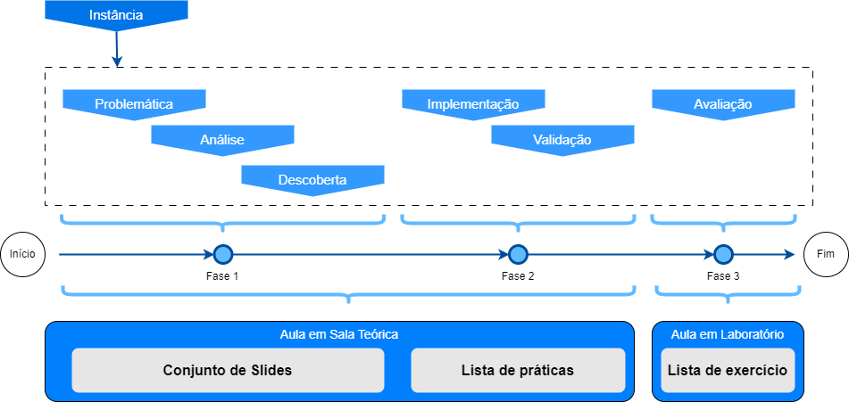
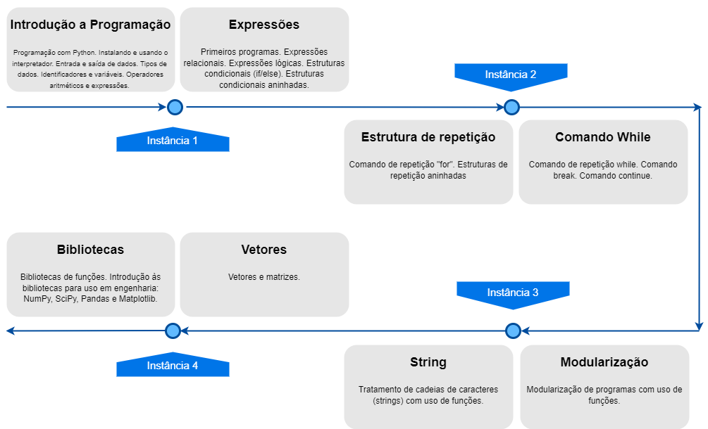

O Módulo de Programação
No Módulo II do curso, intitulado "Módulo de Programação", os alunos irão explorar uma série de tópicos essenciais para a programação. Este módulo inclui a instalação e uso do interpretador, entrada e saída de dados, tipos de dados, identificadores e variáveis, operadores aritméticos e expressões, expressões relacionais e lógicas. Além disso, cobrirá estruturas condicionais, estruturas condicionais aninhadas, comando de repetição "for", estruturas de repetição aninhadas, comandos break e continue, e comando de repetição "while", permitindo aos alunos desenvolverem uma compreensão robusta e prática da programação.
Ainda dentro de uma metodologia de Aprendizagem Baseada em Problemas (PBL), os alunos irão explorar uma série de tópicos essenciais para a programação. Esta abordagem permite que os alunos se envolvam em projetos práticos e problemas do mundo real, promovendo um aprendizado mais profundo e contextualizado. Ao trabalhar com temas como instalação e uso do interpretador, entrada e saída de dados, tipos de dados, operadores aritméticos, expressões relacionais e lógicas, estruturas condicionais e de repetição, os alunos desenvolverão habilidades de resolução de problemas e pensamento crítico, essenciais para a programação. A integração de PBL neste módulo garante que o aprendizado seja aplicado e relevante, facilitando a retenção do conhecimento e preparando os alunos para enfrentar desafios reais em suas futuras carreiras profissionais
Problemática
A problemática foi desenvolvida com base em situações reais, levando em consideração as demandas e desafios enfrentados pelas empresas. A metodologia PBL foi fundamental na construção das problemáticas, pois permitiu que os alunos explorassem questões complexas, analisassem informações, identificassem soluções e trabalhassem de forma colaborativa para alcançar os objetivos propostos. Ao enfrentarem desafios autênticos e contextualizados, os alunos são incentivados a desenvolver habilidades de resolução de problemas, pensamento crítico e trabalho em equipe, preparando-os para os desafios do mundo real da indústria. Nesse contexto o professor irá apresentar a problemática (Link da Aula) com uma discussão generalizada, enfatizando os riscos e possíveis soluções apresentadas.
Análise
A etapa da análise da problemática apresentada será conduzida de maneira que os alunos possam identificar os principais elementos que estão envolvidos no contexto do problema e que podem ser quantificados e tratados. Segue alguns exemplos:
- Geração dos dados;
- Manipulação de arquivos;
- Tratamento dos arquivos;
- Tipos de dados;
- Análise dos dados;
- Armazenamento dos dados;
Em seguida, serão promovidas discussões em grupo e sessões de brainstorming, permitindo que os alunos compartilhem suas ideias, experiências e perspectivas sobre as problemáticas. Essas interações colaborativas fornecerão insights valiosos e incentivarão o pensamento criativo e inovador na busca por soluções.
Ao integrar essas abordagens diversas, visamos proporcionar uma experiência de aprendizagem dinâmica e enriquecedora, que preparará os alunos para enfrentar os desafios do mundo real da indústria.
Descoberta
Os alunos serão guiados por meio de um conjunto de slides e exemplos práticos específicos, que os desafiaram a utilizar técnicas de programação em Python para analisar os dados, desenvolver algoritmos e criar modelos computacionais que abordem as questões apresentadas. Ao interagir com os Notebooks, os alunos terão a oportunidade de experimentar diferentes abordagens, testar hipóteses e iterar em suas soluções, promovendo a aprendizagem ativa e o desenvolvimento de habilidades práticas essenciais para a resolução de problemas na indústria. Serão utilizados a ferramenta do Google Colab para apresentar na prática os conceitos vistos na aula.
Implementação
Na etapa da implementação, os alunos aplicarão os conhecimentos adquiridos na etapa anterior para desenvolver soluções concretas para os problemas apresentados. Utilizando um cenário prático resolvido dentro de um ambiente de desenvolvimento colaborativo, como o Google Colab, os alunos terão a oportunidade de traduzir suas ideias em código Python funcional.
Eles serão orientados a seguir as boas práticas de programação, organizar o código de forma clara e eficiente. Durante esse processo, os alunos terão a oportunidade de experimentar diferentes abordagens, realizar testes e ajustes iterativos, e finalmente implementar soluções que atendam aos requisitos específicos de cada problema.Para a implementação, será utilizado no Google Colab com uma lista de práticas. Ao final dessa etapa, espera-se que os alunos tenham desenvolvido soluções robustas e eficazes que abordem as problemáticas propostas.
Validação
Na etapa de depuração, os alunos revisaram cuidadosamente o código implementado em busca de erros e possíveis melhorias. Utilizando técnicas de depuração, como a impressão de variáveis, a execução passo a passo e a identificação de exceções, eles identificaram e corrigindo eventuais falhas no código. Além disso, os alunos serão incentivados a realizar testes abrangentes para verificar se as soluções implementadas funcionam corretamente em diferentes cenários e condições. Será utilizado o Google Colab em uma lista de práticas
Durante esse processo, os alunos também terão a oportunidade de refletir sobre o processo de desenvolvimento, identificar áreas de melhoria e propor ajustes e otimizações adicionais. Eles serão encorajados a trabalhar de forma colaborativa, compartilhando conhecimentos e experiências entre si para resolver desafios de depuração mais complexos. Ao final dessa etapa, espera-se que os alunos tenham adquirido habilidades sólidas em depuração de código e sejam capazes de identificar e corrigir erros de forma eficiente.
Além disso, a etapa de depuração também servirá como uma oportunidade para os alunos consolidarem seu entendimento dos conceitos de programação Python abordados durante o curso. Ao enfrentar desafios reais de depuração, eles terão a chance de aplicar seus conhecimentos de forma prática e aprofundar sua compreensão das estruturas de dados, algoritmos e técnicas de programação. Essa prática intensiva de depuração não apenas melhora suas habilidades técnicas, mas também os prepara para enfrentar problemas semelhantes no futuro, equipando-os com as habilidades necessárias para resolver desafios complexos de programação com confiança.
Avaliação
Para a avaliação do que foi desenvolvido no curso, será utilizado o material disponível no Google Colab em uma lista de exercícios contextualizada com questões para promover a aprendizagem e que deve ser postada na Plataforma disponibilizada pelo Professor.
Ao seguir esse passo a passo de avaliação, será possível fornecer uma análise abrangente e criteriosa do que foi desenvolvido no curso, garantindo uma avaliação justa e precisa do aprendizado dos alunos e contribuindo para seu crescimento e desenvolvimento contínuo como programadores Python.
Esquema da aula
A aula será dividido em três fases, as duas primeiras em sala de aula teórica, a última em laboratório. Também é possível verificar como a instância e os seus seis momentos estão distribuidos dentro de cada fase da aula. Além de identificar os momentos em que o conteúdo será trabalhado, na primeira fase temos o conjunto de slides, em seguida, vamos trabalhar a lista de práticas, ainda em sala de aula teórica, e na última fase, já no laboratório, é trabalhado a lista de exercício. Veja esquema na figura abaixo
 Fonte: Desenvolvida pelo autor.Esquema dos conteúdos
No diagrama abaixo é possível identificar todas as divisões criadas, chamadas de Instâncias, foram criadas 4 (Instância 1, Instância 2, Instância 3 e Instância 4), para cobrir o conteúdo do Módulo de Programação da disciplina de ICC. Nele é possível identificar tambem o conteúdo trabalhado.
 Fonte: Desenvolvida pelo autor.